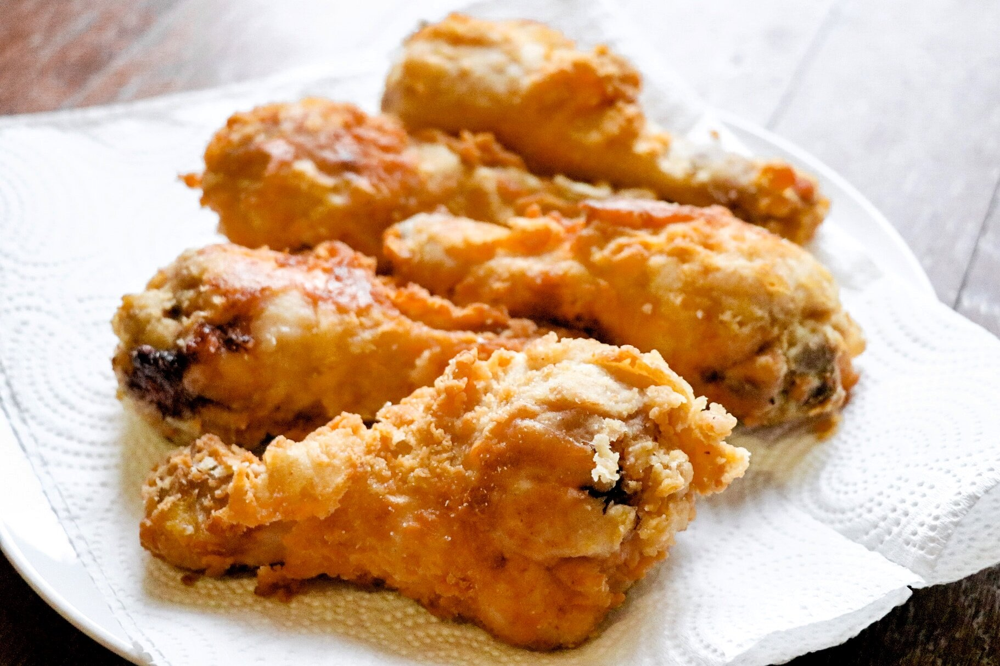

Southern Fried Chicken

A classic southern fried chicken recipe the sort of which has been handed down through the generations
Ingredients
1 (3 pound) whole chicken, cut into 6 pieces
2 eggs, beaten
1 (12 fluid ounce) can evaporated milk
2 teaspoons salt
2 teaspoons ground black pepper
2 teaspoons garlic powder
2 teaspoons onion powder
2 ½ cups all-purpose flour
1 ½ cups vegetable oil for frying
Method
- In a medium size bowl mix together the eggs and milk. Add ALMOST all of the salt, pepper, garlic powder, and onion powder (reserve a dash of each for seasoning the chicken pieces). Set aside.
- Sprinkle a dash of the remaining salt, pepper, garlic powder and onion powder onto both sides of the chicken pieces.
- In a large skillet, heat the oil over medium heat. Put the flour in a plastic bag. One piece at a time, dip the chicken into the egg/milk mixture then add to the plastic bag. Shake the bag so that the flour is covering each piece of chicken.
- You can check to see if the oil is hot enough by sprinkling a little flour in the skillet. If it fries, it's hot enough! Place the chicken pieces in the skillet. After about 5 minutes, turn the chicken over. Let chicken fry for about 15 minutes or until the meat is cooked through and the juices run clear. Enjoy!